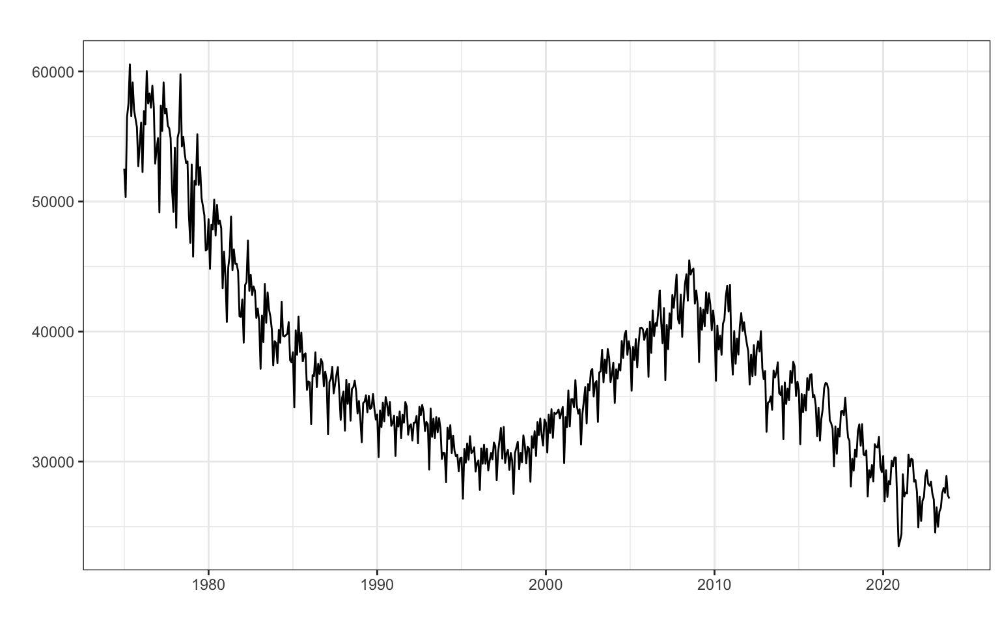
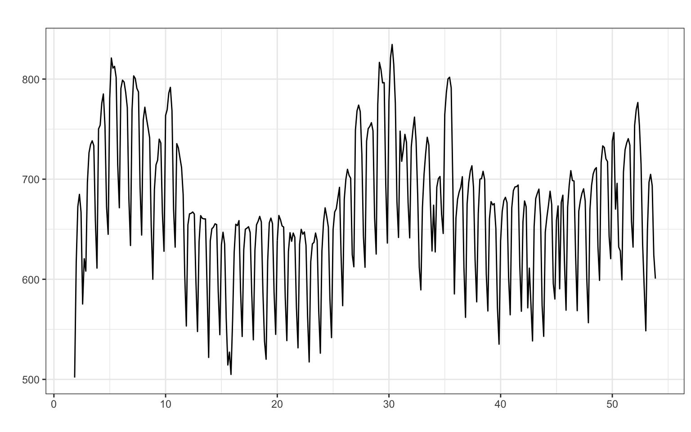

Previsión con Datos Temporales (GBIA)
Iván Arribas (Depto. Análisis Económico. Universitat de València)
La mayoría de las series con fechado más fino que el anual (mensual, diario, horario…) tienen componente estacional. Esta componente tiene diversas causas: pautas sociales, climatología, estructura laboral, calendario… Así, vamos a finalizar nuestro recorrido a través de los diferentes tipos de series analizando y prediciendo las series con estacionalidad, con independencia de que tengan o no tendencia.
La Figura 1 muestra ejemplos de este tipo de series. El panel (a) muestra los nacimientos mensuales en España desde enero de 1975 hasta diciembre de 2023. Es una serie cuya tendencia ha sufrido varios cambios en el periodo de análisis y con una marcada estacionalidad debida, principalmente, al número de días del mes (véase Tema 2). El mes con menor número de nacimientos es febrero y, en general, los meses con más nacimientos son los de 31 días. El panel (b) muestra el consumo diario de electricidad (GWh) en España desde el 1 de enero de 2023 hasta el 31 de diciembre de 2023. Esta serie tiene una marcada estacionalidad, con un nivel de consumo elevado de lunes a viernes que alcanza su máximo el miércoles, y una caída importante en el consumo el fin de semana, especialmente el domingo (véase Tema 2). Como de la serie de consumo eléctrico se muestran solo un año, no es posible ver si tiene tendencia. Los cambios de nivel en el consumo de electricidad dentro del año no deben confundirse con tendencia y son realmente producidos por una segunda componente estacional de orden 365 asociada a la temperatura y el uso de sistemas de climatización en oficinas y hogares.
Aunque para que exista componente estacional el fechado debe ser mas frecuente que el anual, no todas las series con fechado mensual o diario tienen estacionalidad. Por ejemplo, la serie de Defunciones diarias analizada en el Tema 3 no tenía estacionalidad, y las ventas mensuales de un producto básico de alimentación (leche, patatas…) en un supermercado tampoco presentan estacionalidad.
El análisis de estas series es necesariamente más complejo y por ese motivo en este tema revisitaremos solo dos de los métodos vistos en los temas precedentes: los métodos sencillos y los métodos de Alisado exponencial. Los modelos Arima con estacionalidad los dejaremos para un tema aparte.
En el método ingenuo con estacionalidad la predicción para un periodo es la última observación disponible de la misma estación que la fecha que se desea predecir. Es decir, \(\hat{y}_{T+h}=y_{T-m(k+1)}\), donde
R: snaive(y, h)No hay métodos sencillos cuando la serie tiene tendencia y estacionalidad, así que se suele usar el método ingenuo con estacionalidad.
Podemos usar el método ingenuo con estacionalidad con la serie Nacimientos para obtener una previsión a dos años vista. Consideraremos la serie sólo desde enero de 2020.
nacimientos <- read.csv2("./series/Nacimientos.csv",
header = TRUE)
nacimientos <- ts(nacimientos[, 2],
start = c(1975, 1),
frequency = 12)
nacimientos <- window(nacimientos, start = 2000)
snaive.nacimientos <- snaive(nacimientos,
h = 24,
level = 95)
accuracy(snaive.nacimientos) ME RMSE MAE MPE MAPE MASE ACF1
Training set -273.0399 1703.946 1367.75 -1.04244 3.941892 1 0.7367184El error absoluto porcentual medio es del 3.9% (que corresponde a unos 1700 bebés según RMSE). Es decir, aplicando algo tan simple como predecir el número de nacimientos para un mes como los nacimientos del mismo mes del año previo, tenemos ya un error de ajuste muy bajo. Sin embargo, este método en general sobreestima algo el número de nacimientos (MPE inferior a -1%) y sus predicciones por intervalo no son fiables.
La Figura 2 muestra la serie y la predicción que, debido al método usado, no incorpora la tendencia decreciente de los últimos años.
En las series con tendencia y estacionalidad, para obtener una predicción en el periodo \(t+1\) con datos hasta el periodo \(t\) necesitamos tres componentes:
A partir de estas componentes obtenidas en el periodo \(t\) y para un esquema aditivo, se tendría que la predicción en el periodo \(t+1\) es:
\[\widehat{y}_{t+1} = l_t + b_t + s_{t+1-m}.\]
En general, las componentes pueden existir o no y se pueden combinar entre ellas aditiva o multiplicativamente. Veamos algunos casos:
Existen todas y son multiplicativas: \(\widehat{y}_{t+1}=l_t \cdot b_t \cdot s_{t + 1 - m}\)
Existen todas, nivel y pendiente aditivas, y estacionalidad multiplicativa: \(\widehat{y}_{t+1}=(l_t+b_t)s_{t + 1 - m}\)
No hay pendiente y la estacionalidad es aditiva: \(\widehat{y}_{t+1}=l_t+s_{t + 1 - m}\)
En las expresiones previas hemos supuesto que se quería obtener una predicción a un periodo vista (\(\widehat{y}_{t+1}\)). Si el objetivo es estimar una previsión \(h\) periodos hacia delante desde el periodo \(t\), \(\widehat{y}_{t+h}\), hay que modificar la ecuación de predicción adecuadamente. Por ejemplo, para el caso aditivo se tendría que
\[\widehat{y}_{t+h} = l_t+hb_t+s_{t+h-m(k+1)}\] donde \(k = \lfloor (h-1)/m\rfloor\).
Recordemos que en función del tipo de tendencia de la serie teníamos cinco posibilidades (N, A, Ad, M y Md). Por otro lado, si la serie tiene estacionalidad, este puede ser aditiva (A) o multiplicativa (M). Por tanto, dentro de las series con estacionalidad hay 10 posibles casos, mostrados en la Tabla 1. En la tabla, la primera letra hace referencia al tipo de tendencia y la segunda al tipo de estacionalidad.
| Tendencia | Estacionalidad | |
|---|---|---|
| Aditiva (A) | Multiplicativa (M) | |
| Ninguna (N) | N, A | N, M |
| Aditiva (A) | A, A | A, M |
| Aditiva Amortiguada (Ad) | Ad, A | Ad, M |
| Multiplicativa (M) | M, A | M, M |
| Multiplicativa Amortiguada (Md) | Md, A | Md, M |
Cada caso difiere en las componentes que se observan y su esquema, dando lugar a un conjunto diferente de ecuaciones recursivas de actualización.
Si a los 10 casos de la Tabla 1 se añade que el error puede ser aditivo (A) o multiplicativo (M), obtenemos 20 posibilidades. Si, además, incluimos los 10 casos vistos en el Tema 6 para series sin estacionalidad, tenemos que una serie cualquiera se puede clasificar dentro de 30 posibilidades. Podemos estimar cualquiera de los treinta modelos usando la función ets del paquete forecast.
Acude al artículo de Hyndman and Khandakar (2008) para saber más de cada modelo, o al libro de Hyndman et al. (2008).
El método más usual de Alisado exponencial para una serie con tendencia y estacionalidad es el de Holt-Winters. Existen dos versiones según que el esquema sea aditivo o multiplicativo:
donde recordemos que las letras indican: error, tendencia y estacionalidad.
Las ecuaciones recursivas de actualización son:
\[ \begin{aligned} l_t & =\alpha (y_t - s_{t-m} ) + (1-\alpha)(l_{t-1}+b_{t-1}) \\ b_t & =\beta (l_t - l_{t-1}) + (1-\beta)b_{t-1} \\ s_t & =\gamma (y_t - l_{t-1} - b_{t-1}) + (1 - \gamma)s_{t-m} \end{aligned} \] con \(0 \leq \alpha, \beta, \gamma \leq 1\).
La ecuación de la predicción intramuestral a un periodo vista es \[\widehat{y}_{t+1} = l_t + b_t + s_{t+1-m},\] de forma que la ecuación de predicción extramuestral es: \[\widehat{y}_{T+h}=l_T + h b_T + s_{T+h - m(k+1)},\] con \(k = \lfloor(h-1)/m\rfloor\).
Observa que las ecuaciones para el nivel y la pendiente son similares a las ya vistas en el Tema 6 para el método de Holt. Respecto de la ecuación de actualización de la estacionalidad, dos estimaciones razonables de esta componente en el periodo \(t\) son su valor estimado a partir de la serie menos su tendencia \(y_t-l_{t-1} - b_{t-1}\), y la estimación que ya teníamos de la estacionalidad previamente, \(s_{t-m}\). La estimación final es una media ponderada, parametrizada por \(0 \leq \gamma < 1 - \alpha\).
Interpretación del parámetro \(\gamma\):
Las ecuaciones recursivas de actualización son:
\[ \begin{aligned} l_t & =\alpha \frac{y_t}{s_{t-m}} + (1-\alpha)(l_{t-1}+b_{t-1}) \\ b_t & =\beta (l_t - l_{t-1}) + (1-\beta)b_{t-1} \\ s_t & =\gamma \frac{y_t}{l_{t-1} + b_{t-1}} + (1 - \gamma)s_{t-m} \end{aligned} \]
La ecuación de la predicción intramuestral a un periodo vista es \[\widehat{y}_{t+1} = (l_t + b_t)s_{t+1-m},\] de forma que la ecuación de predicción extramuestral es: \[\widehat{y}_{T+h}=(l_T + h b_T)s_{T+h - m(k+1)}.\]
Vamos a usar el método de Alisado para predecir la serie Nacimientos.
Usaremos la función ets sin ningún tipo de restricción para que localice el modelo (de entre los 30 posibles) que mejor se ajusta a los datos.
ETS(A,A,A)
Call:
ets(y = nacimientos)
Smoothing parameters:
alpha = 0.4892
beta = 0.0107
gamma = 1e-04
Initial states:
l = 33052.834
b = 143.8979
s = -11.4659 3.8886 1957.737 1463.932 1013.289 1255.209
-953.4959 217.809 -1369.601 -172.4478 -3318.506 -86.3485
sigma: 906.7055
AIC AICc BIC
5570.926 5573.193 5633.196
Training set error measures:
ME RMSE MAE MPE MAPE MASE
Training set -64.51908 881.1593 672.4836 -0.2064835 1.96789 0.4916715
ACF1
Training set 0.05973202El mejor modelos (A, A, A) tiene error, tendencia y estacionalidad aditivas: \(y_t = l_{t-1} + b_{t-1} + s_{t + 1 - m}\).
El bajo valor de \(\beta\) y \(\gamma\) indican que ambas, la pendiente y la estacionalidad, varían muy lentamente en el tiempo (véase la Figura 3).
Respecto de la calidad del modelo, el MAPE de 2% indica que estamos ante un modelo que se ajusta muy bien a los datos; y el valor de MASE igual a 0.49 indica que este modelo reduce en un 51% el error del método ingenuo con estacionalidad, el más sencillo posible. El modelo no tiene sesgo y el valor de ACF1 de 0.06, inferior a 0.1, indica que el intervalo de confianza de las predicciones está bien calculado.
Podemos ver los últimos valores estimados del nivel, la pendiente y la estacionalidad para interpretarlos. Como el último dato de la serie es diciembre de 2023, los valores del nivel \(l\) y la pendiente \(b\) mostrados corresponden a ese mes. Sin embargo, los valores de la componente estacional están ordenados al revés: s1 es el valor estacional para diciembre (mes del último dato), s2 el de noviembre, hasta s12 que sería enero.
l b s1 s2 s3 s4
27041.914738 -55.737267 -11.607442 3.801462 1957.628722 1463.714031
s5 s6 s7 s8 s9 s10
1013.175595 1255.001436 -953.711757 217.589514 -1369.784143 -172.610401
s11 s12
-3318.617718 -86.437475 Febrero es el mes con menor número de nacimientos: nacen 3318 bebés menos, respecto de la media anual. En octubre es cuando más bebés nacen: 1957 más que la media anual.
Podemos usar estos valores para predecir los próximos 12 meses de 2024 (ojo, el etiquetado de la salida no tiene sentido):
nacimientosEts$states[TT, 1] + (1:12) * nacimientosEts$states[TT, 2] +
nacimientosEts$states[TT, 14:3] s12 s11 s10 s9 s8 s7 s6 s5
26899.74 23611.82 26702.09 25449.18 26980.82 25753.78 27906.76 27609.19
s4 s3 s2 s1
28003.99 28442.17 26432.61 26361.46 Nuestra predicción para enero de 2024 es de 26899.74 bebés y para diciembre de 2024 de 26361.46 bebés.
Si pedimos los valores de predicción tenemos (sólo se muestran los primeros meses):
Point Forecast Lo 95 Hi 95
Jan 2024 26899.74 25122.63 28676.85
Feb 2024 23611.82 21625.03 25598.61
Mar 2024 26702.09 24517.87 28886.32
Apr 2024 25449.18 23076.55 27821.81
May 2024 26980.82 24426.68 29534.96La Figura 4 muestra la serie Nacimientos, su predicción a dos años vista y el intervalo de confianza.
Se identifica varios valores claramente atípicos –superan las 3 desviaciones típicas– que corresponden a enero de 2011 y, aproximadamente, nueves después del confinamiento por la pandemia (diciembre de 2020, y febrero y marzo de 2021). Abril de 2008 y diciembre de 2010 son otros candidatos a intervención por superar las 2.5 desviaciones típicas.2
error <- residuals(nacimientosEts)
sderror <- sd(error)
autoplot(error, series="Error",
colour = "black",
xlab = "Periodo",
ylab = "Error",
main = "") +
geom_hline(yintercept = c(-3, -2, 2 ,3)*sderror,
colour = c("red", "blue", "blue", "red"), lty = 2) +
scale_x_continuous(breaks= seq(2000, 2024, 2))
fechas <- format(seq(as.Date("2000-1-1"), as.Date("2023-12-1"), "month"), "%Y-%m")
fechas[abs(error) > 3 * sderror][1] "2011-01" "2020-12" "2021-02" "2021-03"Un método alternativo para obtener valores atípicos es la prueba de Tukey (véase la píldora Valores perdidos y valores atípicos).
En este caso solo se identifica como atípico el valor de diciembre de 2020.
Una alternativa para predecir la serie Nacimientos es predecir la transformación logarítmica de la serie. Después, se aplica la transformación inversa y se obtienen las predicciones de la serie original. Recuerda que el argumento lambda = 0 posibilita realizar todo el proceso de forma directa y sencilla.
Si pedimos a la función ets que identifique el mejor modelo para la transformación logarítmica de la serie Nacimientos, aparece un modelo con tendencia amortiguada y un valor de \(\phi = 0.978\), cercano al máximo valor permitido. Por este motivo, vamos a solicitar la identificación y estimación del mejor modelo excluyendo aquellos con tendencia amortiguada.
# nacimientosEtsl <- ets(nacimientos, lambda = 0)
nacimientosEtsl <- ets(nacimientos,
lambda = 0,
damped = FALSE)
summary(nacimientosEtsl)ETS(A,N,A)
Call:
ets(y = nacimientos, damped = FALSE, lambda = 0)
Box-Cox transformation: lambda= 0
Smoothing parameters:
alpha = 0.481
gamma = 1e-04
Initial states:
l = 10.5517
s = -0.0015 -0.0031 0.0572 0.0468 0.0318 0.0416
-0.0231 0.0064 -0.0408 -0.0017 -0.1018 -0.0117
sigma: 0.029
AIC AICc BIC
-393.7052 -391.9405 -338.7608
Training set error measures:
ME RMSE MAE MPE MAPE MASE
Training set -72.14764 944.7309 706.6812 -0.2861817 2.063566 0.5166743
ACF1
Training set 0.1615821El modelo identificado es “ANA” que tiene error y estacionalidad aditiva y no tiene tendencia: \(\log(y_{t+1}) = l_{t} + s_{t + 1 - m} + \varepsilon_{t+1}\). En general, la transformación logarítmica de una serie sigue un esquema aditivo.
En este caso la calidad de las predicciones (MAPE = 2.1%) es algo inferior a la obtenida con la serie sin transformar. Además, con este modelo, las previsiones por intervalo no son fiables (solo se muestran los primeros meses).
Point Forecast Lo 95 Hi 95
Jan 2024 26884.93 25401.90 28454.55
Feb 2024 24568.01 23068.81 26164.65
Mar 2024 27153.76 25352.86 29082.59
Apr 2024 26113.13 24254.13 28114.62
May 2024 27374.59 25301.98 29616.98La Figura 6 muestra la serie Nacimientos y las previsiones extramuestrales obtenidas con y sin la transformación logarítmica. En este caso, las previsiones con la serie sin transformar son algo mayores que las obtenidas con la serie transformada.
Recuerda, ni la transformación logarítmica ni el uso de predicciones insesgadas (biasadj = TRUE) aseguran mejores predicciones respecto de otras opciones.
Hemos visto que en calidad de ajuste, el modelo de Alisado sobre la serie sin transformar es superior a la del modelo sobre el logaritmo de la serie: mejores indicadores de calidad de ajuste e intervalo de confianza de las predicciones correctos.
Veamos ahora qué método ofrece las predicciones con menor error con origen de previsión móvil. Consideraremos que son necesarios 15 años para ajustar bien los modelos y haremos previsiones a 12 meses vista. Como criterio de calidad de las predicciones vamos a usar el MAPE.
k <- 180
h <- 12
TT <- length(nacimientos)
s <- TT - k - h
mapeAli <- mapeAliL <- matrix(NA, s + 1, h)
for (i in 0:s) {
train.set <- subset(nacimientos, start = i + 1, end = i + k)
test.set <- subset(nacimientos, start = i + k + 1, end = i + k + h)
fit <- ets(train.set, model = "AAA", damped = FALSE)
fcast <- forecast(fit, h = h)
mapeAli[i + 1,] <- 100*abs(test.set - fcast$mean)/test.set
fit <- ets(train.set, model = "ANA", damped = FALSE, lambda = 0)
fcast <- forecast(fit, h = h)
mapeAliL[i + 1,] <- 100*abs(test.set - fcast$mean)/test.set
}
mapeAliMedia <- colMeans(mapeAli)
mapeAliLMedia <- colMeans(mapeAliL)
round(mapeAliMedia, 2) [1] 2.40 2.73 2.89 2.97 2.90 2.89 3.12 3.17 3.28 3.30 3.10 3.07 [1] 2.44 2.91 3.24 3.44 3.46 3.51 3.93 4.11 4.21 4.35 4.38 4.54El método de Alisado sobre la serie original ofrece mejores predicciones para todos los horizontes temporales. A doce meses vista la diferencia es de 1.5 p.p.
Podemos usar el método ingenuo con estacionalidad con la serie Demanda eléctrica, que tiene una estacionalidad de orden 7, pero no parece presentar tendencia.
ME RMSE MAE MPE MAPE MASE ACF1
Training set 0.4959497 45.1574 31.82282 -0.1492087 4.743026 1 0.7470267El error absoluto porcentual medio es del 4.7% o 45 GWh (RMSE), un error razonablemente reducido y el método no presenta sesgo. Sin embargo, la fórmula usada para el cálculo del intervalo de confianza de las predicciones no es válida.
La Figura 7 muestra la serie y la predicción a cuatro semanas vista. Debido a que la semana de referencia para predecir es la semana de Navidad, donde el consumo eléctrico es inferior al usual, las predicciones resultan ser claramente incorrectas. Este es un buen ejemplo de la diferencia entre calidad de ajuste y precisión de las predicciones.
El modelo óptimo sin restricciones es (MAdM) con un valor de \(\phi\) cercano al máximo de 0.98, por lo que se solicita el modelo óptimo excluyendo modelos con tendencia amortiguada.
#electricidadEts <- ets(electricidad)
electricidadEts <- ets(electricidad,
damped = FALSE)
summary(electricidadEts) ETS(A,N,A)
Call:
ets(y = electricidad, damped = FALSE)
Smoothing parameters:
alpha = 0.8585
gamma = 1e-04
Initial states:
l = 696.9707
s = -49.2724 22.6105 35.9717 38.7919 33.4117 9.8245
-91.3378
sigma: 24.5881
AIC AICc BIC
4502.001 4502.623 4541.000
Training set error measures:
ME RMSE MAE MPE MAPE MASE
Training set -0.0244328 24.28306 14.89251 -0.08339514 2.300161 0.4679821
ACF1
Training set 0.024706Ahora el mejor modelo no presenta tendencia y tiene error y estacionalidad aditiva, es decir, \(y_{t+1} = l_t + s_{t+1-m} + \varepsilon_{t+1}\).
El valor \(\gamma = 0\) indica que las estacionalidad se mantiene contante en el tiempo, mientras que el elevado valor de \(\alpha\) indica que el nivel de la serie cambia de forma constante. Este cambio de nivel está relacionado con las variaciones en el consumo eléctrico debido a los cambios en la temperatura y el uso de aparatos de climatización.
Respecto de la calidad del modelo, el MAPE de 2.3% indica que estamos ante un modelo que se ajusta muy bien a los datos; no hay sesgo (MPE es casi cero); y el valor de ACF1, muy bajo, indica que la fórmula usada para el cálculo del intervalo de confianza de las predicciones es válida.
Podemos ver los últimos valores estimados del nivel y la estacionalidad para interpretarlos. Recuerda que los valores de la componente estacional están ordenados alrevés (s1 es domingo y s7 es lunes).
l s1 s2 s3 s4 s5 s6 s7
689.31491 -91.33788 -49.26566 22.61608 35.97953 38.78392 33.40487 9.81824 El domingo la demanda eléctrica cae 91 GWh respecto de la media semanal. Por el contrario, el miércoles es el día de mayor incremento de demanda respecto de la media semanal, 39 GWh.
También podemos usar los últimos valores estimados del nivel y la estacionalidad para predecir una semana,
Si pedimos los valores de predicción para las cuatro semanas siguientes, tenemos (sólo se muestran la primera):
Point Forecast Lo 95 Hi 95
54.00000 699.1331 650.9414 747.3249
54.14286 722.7198 659.2057 786.2338
54.28571 728.0988 652.2990 803.8987
54.42857 725.2944 638.9394 811.6495
54.57143 711.9310 616.1772 807.6848
54.71429 640.0493 535.7402 744.3583
54.85714 597.9770 485.7614 710.1927La Figura 8 muestra la serie Demanda eléctrica, su predicción a cuatro semanas vista y el intervalo de confianza.
error <- residuals(electricidadEts)
sderror <- sd(error)
autoplot(error, series="Error",
colour = "black",
xlab = "Semana",
ylab = "Error",
main = "") +
geom_hline(yintercept = c(-3, -2, 2 ,3)*sderror,
colour = c("red", "blue", "blue", "red"), lty = 2) +
scale_x_continuous(breaks= seq(6, 26, 2))
fechas <- format(seq(as.Date("2023-1-1"), as.Date("2023-12-31"), "day"), "%Y-%m-%d")
fechas[abs(error) > 3 * sderror] [1] "2023-01-01" "2023-01-06" "2023-01-07" "2023-04-06" "2023-04-08"
[6] "2023-05-01" "2023-08-15" "2023-08-27" "2023-10-12" "2023-11-01"
[11] "2023-11-02" "2023-12-06" "2023-12-25"El la Figura 9 se identifican múltiples días atípicos asociados con un consumo inferior al esperado debido a festividades: Año nuevo, Reyes, Semana Santa (el Viernes Santo fue el 7 de abril), Día del trabajador, Virgen de agosto, Día de la hispanidad, Todos los Santos, Día de la Constitución y Navidad. El Día de la Inmaculada (8 de diciembre) no aparece por caer en domingo.
También se observan tres días con un consumo mayor de lo esperado justo después de un festivo, el 7 de enero (tras Reyes), el 8 de abril (Sábado Santo) y el 2 de noviembre (tras Todos los Santos). Aquí la causa no es tanto un incremento inesperado del consumo, como la dinámica del propio método de estimación. Al llegar un día festivo, el método de Alisado falla ofreciendo una predicción más alta de la real y dando lugar a un error negativo. Al día siguiente, el método de Alisado ajusta su predicción a la baja, pero por no ser festivo vuelve a fallar, esta vez ofreciendo una predicción más baja de la real y dando lugar a un error positivo.
Veamos como en este caso la prueba de Tukey identifica las mismas fechas.
[1] "2023-01-01" "2023-01-06" "2023-01-07" "2023-04-06" "2023-04-08"
[6] "2023-05-01" "2023-08-15" "2023-08-27" "2023-10-12" "2023-11-01"
[11] "2023-11-02" "2023-12-06" "2023-12-25"
A la hora de ajustar un modelo a una serie y predecir hay que ser un poco imaginativos, dedicarle tiempo y probar cosas. Por ejemplo, podríamos considerar la transformación logarítmica de la serie. O podríamos cambiar el criterio de estimación de los parámetros o el de selección del modelo óptimo.
Yendo un poco más lejos, para una serie mensual (como Nacimientos) dado que el valor de la serie dependerá forzosamente del número de días del mes, podríamos ajustar y predecir el valor medio de la serie por día del mes. Por ejemplo, los nacimientos medios por día: cociente entre los nacimientos de cada mes y el número de días del mes. Esta serie tendrá una componente estacional más suave, al eliminar el efecto de los meses de febrero bisiestos, y tendrá, previsiblemente, un mejor ajuste.
También podemos mezclar varios de los enfoques previos o ser aún más imaginativos.
El siguiente código muestra el MAPE (para previsiones intramuestrales a un periodo vista) para la serie Nacimientos usando varias de estas opciones. Puedes deducir que se está haciendo en cada caso a partir del código. Sería más adecuado usar otro criterio de validación diferente, pero el objetivo de este epígrafe es recalcar que no hay que quedarse con lo inmediato (predecir una serie con las opciones por defecto de las funciones), sino probar y probar.
[1] 1.96789[1] 1.967941[1] 1.994566[1] 1.930586[1] 1.930586[1] 2.009007[1] 1.934107[1] 1.934107[1] 2.012254[1] 1.871131[1] 1.871131[1] 1.920431La principal conclusión en este caso es que salirse de la estimación directa sobre la serie original no reduce el error significativamente. Sin embargo, cabe destacar que,
| Función | Paquete | Descripción |
|---|---|---|
monthdays |
forecast | da el número de días de cada mes |
Formalmente en el modelo de Holt-Winters multiplicativo el error es aditivo. Es decir, debería ser (A, A, M). Sin embargo, debido a que desde un punto de vista teórico este modelo, junto con otros, puede tener varianza infinita, la función ets no permite por defecto su estimación. Para poder estimar con la función ets el modelo (A, A, M) es necesario añadir el argumento restrict = FALSE. Los modelos que para poder ser estimados requieren este argumento son: ANM, AAM, AAdM, MMA, MMdA, AMN, AMdN, AMA, AMdA, AMM y AMdM.↩︎
Recuerda que el valor de 3 es uno de los posibles y debe ajustarse a las características de la serie y el análisis.↩︎